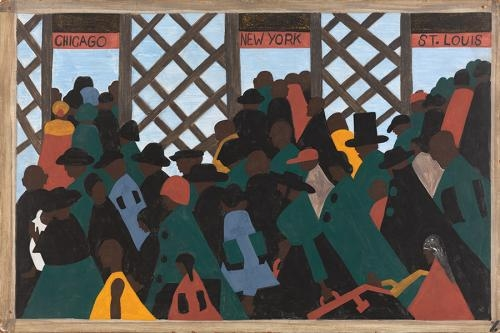

Who is this artist?
Jacob Lawrence (September 7, 1917 – June 9, 2000) was an African-American painter known for his portrayal of African-American life. But not only was he a painter, storyteller, and interpreter; he also was an educator. Lawrence referred to his style as "dynamic cubism," though by his own account the primary influence was not so much French art as the shapes and colors of Harlem.He brought the African-American experience to life using blacks and browns juxtaposed with vivid colors. He also taught and spent 15 years as a professor at the University of Washington.
Lawrence is among the best-known 20th-century African-American painters. He was 23 years old when he gained national recognition with his 60-panel Migration Series, painted on cardboard. The series depicted the Great Migration of African-Americans from the rural South to the urban North. A part of this series was featured in a 1941 issue of Fortune Magazine. The collection is now held by two museums. Lawrence's works are in the permanent collections of numerous museums, including the Philadelphia Museum of Art, the Museum of Modern Art, the Whitney Museum, the Phillips Collection, Metropolitan Museum of Art, the Brooklyn Museum, and Reynolda House Museum of American Art. He is widely known for his modernist illustrations of everyday life as well as epic narratives of African American history and historical figures.
